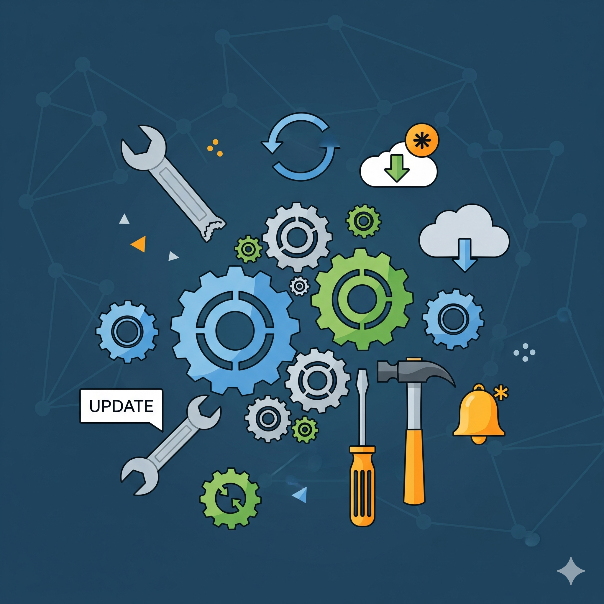

Fase 5: Mantenimiento y Evolución
El mantenimiento comienza una vez que el software ha sido entregado e instalado en el entorno de producción. En esta fase, se corrigen errores que no fueron detectados durante las pruebas y se realizan mejoras o actualizaciones para adaptarse a cambios en el entorno o a nuevas necesidades del usuario.
Hay varios tipos de mantenimiento: correctivo (solución de fallos), adaptativo (adaptación a nuevos sistemas operativos o hardware), perfectivo (mejora de la funcionalidad) y preventivo (modificación para prevenir futuros problemas). Esta fase es la que suele durar más tiempo, a menudo el ciclo completo de vida operativo del software.
